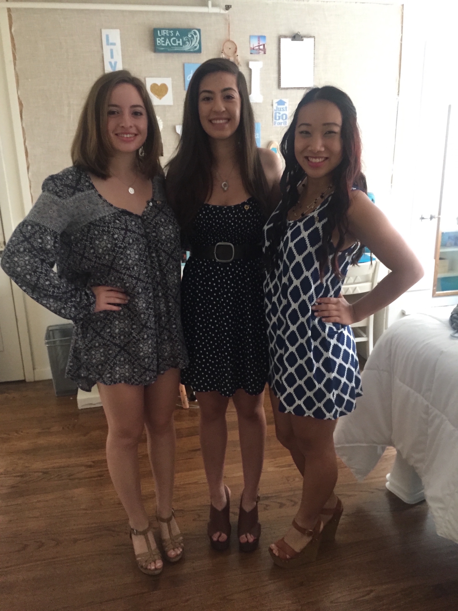
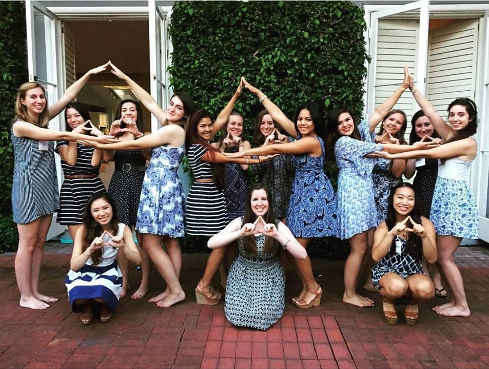

About Me



Hometown: Walnut Creek, CA
I'm always so thankful to have grown up in the bay. The culture here is always so positive; Everyone can do anything and everyone is an innovator. My favorite part about the bay, though, is how the area is so diverse and open to cultures. Both my parents immigrated here from Afghanistan, and although I was scared coming into college as a first generation student, I was surprised at how many students identified that way as well and how excited everyone was to learn about new cultures.
College: University of California, Berkeley
When I got my acceptence letter, I knew this was the school for me. I didn't even think about the other schools that I was accepted to; I just knew Berkeley would be the perfect fit. And I was right. Berkeley encouraged me to step out of my comfort zone and try new things. In fact, I found my passion for Computer Science here.
Major: Computer Science
As a first year undergraduate, I was pretty much open to anything. One of my friends encouraged me to take a computer science class here so I went ahead and enrolled myself. The class was insanely difficult, especially to someone completely new at programming, but although the class was hard, I found myself being so proud of everything I created. Computer Science quickly grew into a passion and now I can't imagine any better career than a software engineer
Sorority: Delta Delta Delta (Tri Delta)
Joining a sorority was the one of the best decisions I've ever made. I've made such amazing friends and I'm thankful that I have such a great support system. Being a women in STEM isn't comfortable as there are always more men in my classes, but because so many people in Tri Delta are also STEM majors, I can always count on them for support, both academically and mentally.